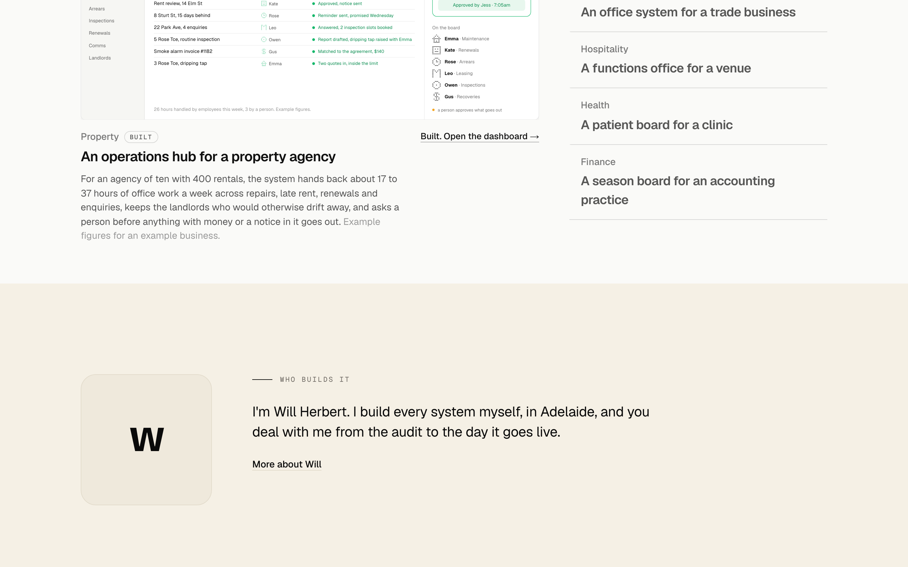
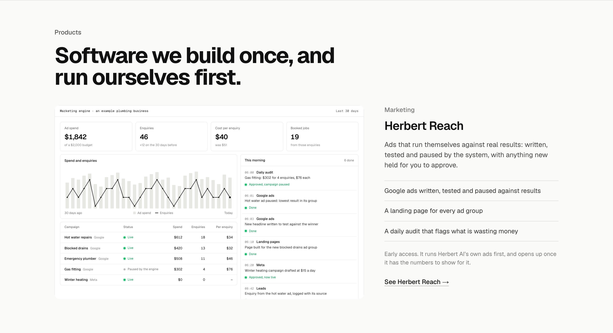
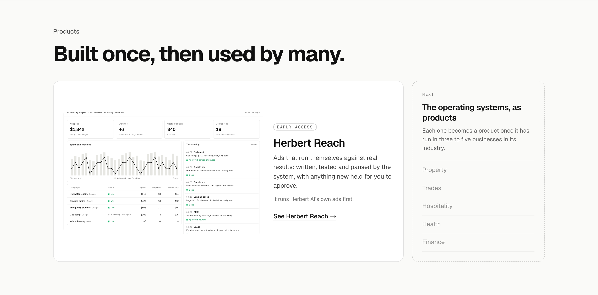

Products: Herbert Reach three ways
Homepage section 5. Herbert AI is the company and its own software carries its own name, the Wispr AI and Wispr Flow pattern. First the marketing engine under the placeholder name Herbert Reach (not final; the business-name check comes before it ships), shown as early access rather than a paywall while it runs Herbert AI’s own ads. The dashboard is the one built for The Work on 13 October. The copy reuses the engine page’s lines and claims no results. The link goes to the engine’s example page for now; an early-access form on that page is a later build. Each option in place at 1440, finished state.
TodayNo Products section: Operating Systems runs straight into the founder note.

1. Its own bandThe one dark section on the page, with the product name as the heading and “by Herbert AI” above it, so it reads as its own brand under the company (the Wispr Flow pattern). The dashboard plays once in view. The dark band also breaks the run of paper sections before the founder. Recommended.

2. Screen and wordsThe site’s layout A, the dashboard big and the product beside it, under a heading about software built once and run first. Calm and consistent with Operating Systems above it, so the product reads as one more section rather than a brand.

3. The shelfThe engine as the one product on a shelf, beside a dashed card saying the operating systems become products once each has run in three to five businesses. Shows the suite ambition; the risk is a roadmap on the homepage that is not yet real.
